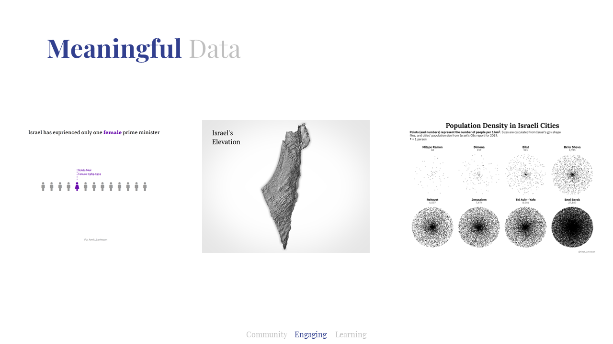
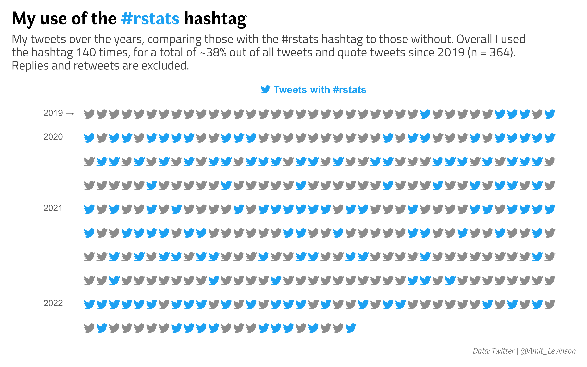
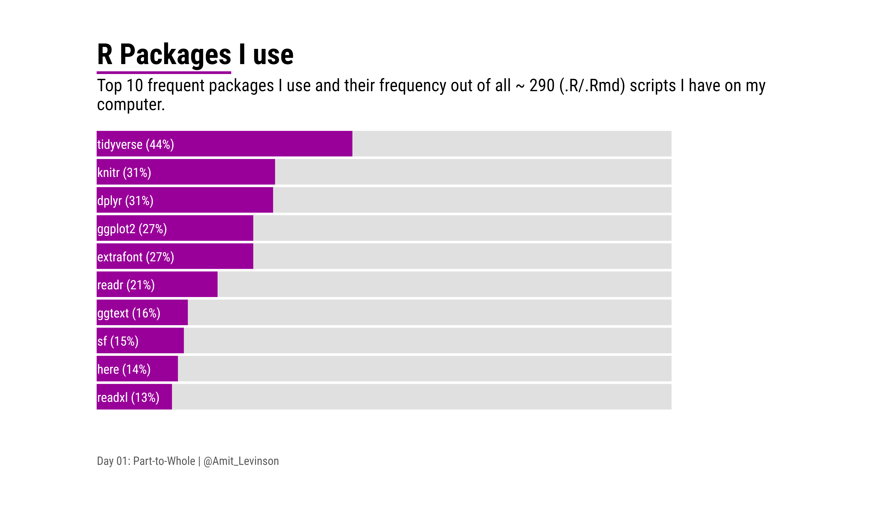

Data visualization challenges and their educational inspiration
I’ve actually come across data visualization challenges somewhat by chance. When I started thinking about MA thesis (somewhere in 2019) I realized I wanted to analyze it in something other than SPSS we learned, and was recommended to try out the R programming language.1
But I didn’t want to wait for my thesis data to arrive, only to be incompetent to analyze it; rather, I wanted to be capable of analyzing it when the time came. In order to do this I had to be able to use R properly, i.e. know how to manipulate and analyze data, which eventually led me to data visualization challenges.

In the next couple of sections I’ll share what is it I love about and learned from these challenges, with the hope to motivate you to participate in an upcoming one.
Community
As I was roaming across Twitter one day I came across the #TidyTuesday challenge, a data visualization challenge oriented towards the R community. Every week a new dataset is published and the R community is invited to analyze and visualize it.
Observing as a spectator for a few weeks I decided to participate in week 39, 2019. Doing a quick exploratory analysis of the data I noticed a trend, somewhat intuitive, of an increase in the number of visitors to national parks across years. Remembering a plot with added icons from the week before by Ariane Aumaitre, I adapted some of her code and posted my first plot.
The feedback from the community was amazing. People were glad I joined, wanted to learn how I made the plot, e.g.added the icons, and peak at my code (which took me a few hours to get on GitHub); I was hooked on the project.
As time went by I joined additional community visualization challenges such as the #30DayMapChallenge and #30DayChartChallenge. In different from the #TidyTuesday, in these challenges you bring your own data. The challenges occur throughout a whole month, when each day has a different theme and participants are invited to share maps/charts relating to that theme.
While the two challenges differ, I found a lot in common: Anyone and everyone are invited, beginners and advanced alike. Plot it in R, Python, Tableau, Qgis and what not. Most importantly, despite never meeting anyone I constantly felt like I was part of a community.
Engaging
In challenges that I brought my own data (e.g. 30daysX) I realized that when I brought data that engaged me I was more committed to participate. “But Amit, what’s engaging data?” you might ask. Well this broke down for me to two kinds of engagement, meaningful and personal.
Meaningful Data
As someone living in Israel I found data relating to Israel meaningful to explore. I was intrigued and challenged by it, and wanted to answer questions pertaining to it as an Israeli.

So I picked up various datasets relating to Israel and visualized them, for example previous Israeli prime ministers highlighting the only female PM or visualizing Israel’s elevation. More recently I visualized population density in Israeli cities, a dataset I had laying around and been meaning to explore for a while.
Personal Data
Other data that engaged me was something that related to me personally, such as my behavior. Realizing that I collected various data ahead of challenges so by the time the challenge started I was eager to explore them.

For example as someone who uses Twitter mainly for R related things I was curious to see how much I use the #rstats hashtag, a hashtag commonly associated with the R community. Alternatively, currently living in Tel-Aviv I frequently walk to Dizengoff square, so I was curious to see how long it took to walk to various locations from there.

Meaningful and personal here are somewhat blurry, but I hope it conveys the picture: In challenges you bring your own data (BYOD 😉) try to find data that engages you, something you’re passionate about or been wanting to explore for a while. Take these opportunities to explore them, build your portfolio or just answer questions you’ve had laying around for a while.
Learning
Learning from others
One of the things I love about these challenges is that many of the participants share their code, which you can then adapt for your own needs.
During the #30DayMapChallenge in 2019 Alexandra Kapp published a map of frequently traveled routes in Berlin using simulated data. What she did was, to my interpretation, elegantly brilliant: She sampled two points in Berlin and calculated the shortest route between them. She did this for 500 pairs of points and plotted the routes traveled on where the line width represents the frequency of the street traveled compared to all other streets.
Seeing this and amazed by its simplicity I adapted it for my own needs: The next year I ran the same analysis on Tel-Aviv, producing the plot on the right.

While this was one example, adapting others’ code is something prevalent in a coder’s life: You find an answer on Stack Overflow or in some GitHub repository and adapt it to your current need. These challenges provided a great lesson in how to take someone else’s code and integrate it to what it is you’re trying to produce.
Learning new tools and methods
Somehow I find this idea - learning new tools and methods - in these challenges somewhat redundant. I mean, unless you’re proficient in the language you’reusing, you likely to encounter some challenge you’ll learn from. With that said, pointing them out really helps look at one’s accomplishments.
For one of the days in the first #30DayMapChallenge I participated I had a vision to create a regular map transitioning to a cartogram. I remember sitting for days trying to work the code, even while following various blog posts. But something constantly went wrong: I had the data in a different format, the post referenced an older version of a package and more. And yet, the feeling after succedding was great, realizing I learned a lot in the process.

I also got to try out different ways of representing data, such as trying to plot data with an extreme outlier, leveraging the area above the plot to highlight it’s starking distance from other points. At another time I wanted to try out a new tool, so after collecting and aggregating the R packages I use I visualized it using D3.js, something I definetely look forward to exploring more in the future.

What I love about these challenges is even without deliberatly attempting to challenge ourselves it occurs: The data is slightly different than what we’re used to, we try out one new function and other things that expand our knowledge one step further.
Learning things I implement at work
As I created charts at work I noticed I would translate a lot of practices I implemented and experimented with in challenges into my work charts. For example, the whole idea of pre-attentive attributes, how do I guide my reader through the chart, showing him where to focus first, second and last. The idea of using color, bold text, miniamlism and much more to guide the reader’s attention. At other times it was more specific things such as annotations, and using them to guide the audience to the main takeaway at hand.

Sometimes it was even more subtle things, such as having a reprtoire of graphs to choose from or choosing the right one for the data I wanted to present. Either way, I realized that participating in these challenges made me a better communicator and analyst
Recapping
Why Participate?
So if I’ll try to recap my experiences and what I took from these challenges, and why I think you too should join too then it’s because of the following:
Welcoming community — The community in the challenges I participated in were very welcoming. Come with any level of experience and tool you use, everyone is welcome, no strings attached as to how frequently you should participate.
Interacting and being inspired by amazing people — It’s amazing how many people I learned about and got to interact with from these challenges. My Twitter feed has grown immensely with many of these people I learn from in these challenges and work they continue to share since
Invitation to leave your comfort zone and challenge yourself — These challenges, in effect, constantly push your limits. A new dataset, a new function or new tool altogether; every theme comes with new and exciting challenges to overcome and learn from.
Explore various data — Since you bring your own data to some of these challenges it’s a great opportunity to explore data you had laying around or something personal. And when the dataset is provided? you get to try out different topics and format of data such as text, time series, networks and more.
Gain experience and confidence — I didn’t intentionally join these challenges to become better, but that’s what happend. When I got my thesis data I was all ready to analyze and confident I’ll be able to overcome any difficulty.
Create something to call your own — The best part of participating in these challenges is suddenly you have this great and diverse portfolio to share with others. Just set up a simple webpage and host all your contributions to share with othes!
It’s fun!
How to start
Well, you just start! Seriously, there’s many challenges out there occurring all the time. #TidyTuesday project, #MakeOverMonday, #StorytellingWithData (SWD), Vis4SocialGood, 30DayChartChallenge, 30DayMapChallenge and more!
So, will I see you at the next challenge 🤩?